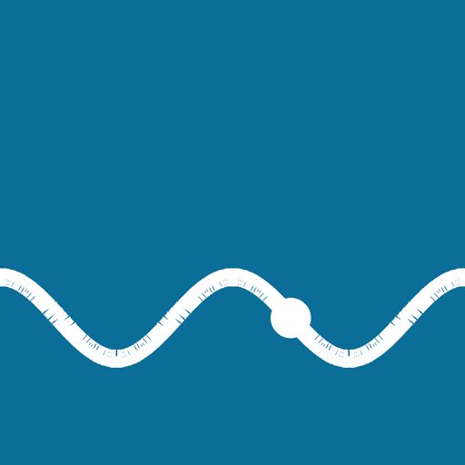
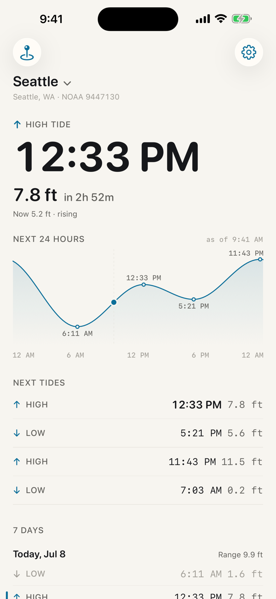
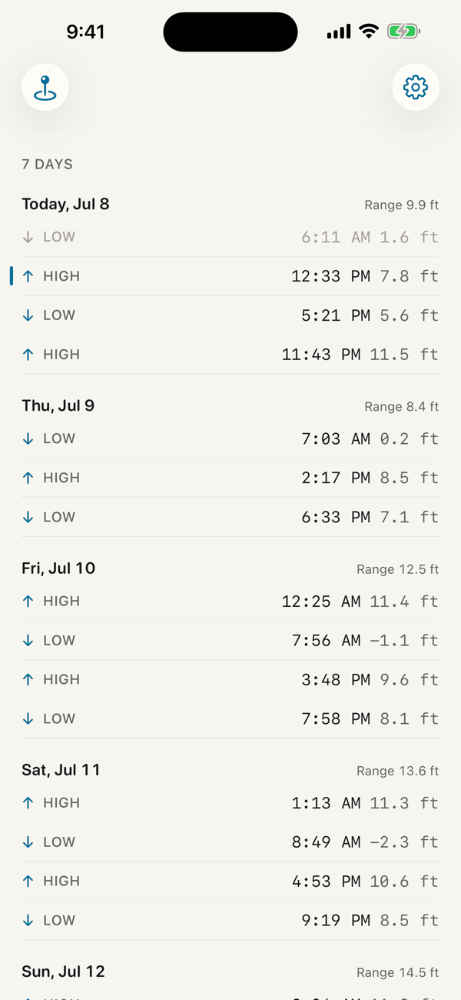
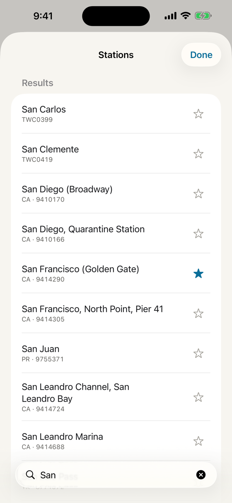
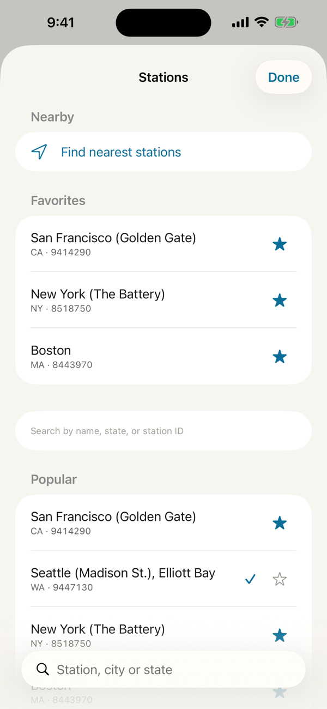
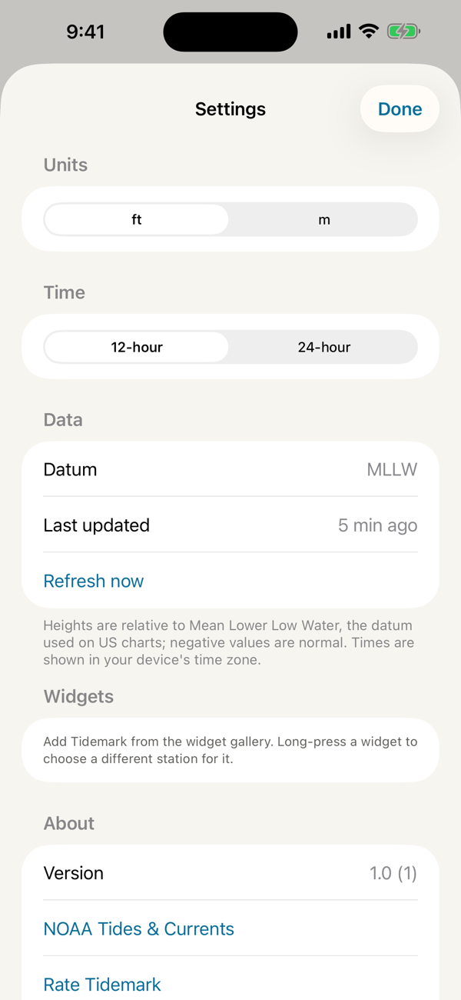

Pay once.
Own the tide.
The next high and low tide on your iPhone Lock Screen, from NOAA.
Download on the App Store$3.99 once. No subscription, no ads, no account.





Why Tidemark
See it without opening an app
Lock Screen and Home Screen widgets show the next tide, its height and how long until it turns. Each widget can follow a different station.
Official NOAA data
Predictions come directly from NOAA CO-OPS, with a 24-hour curve and a seven-day table of highs and lows.
Works offline
Predictions are cached on your phone, so the week ahead is still there when you lose signal at the beach or on the water.
Private by design
There's no account, no analytics and no tracking. Location is only used when you ask for nearby stations, and it never leaves your phone. Privacy policy
Made for
Anglers timing the tide change, surfers checking the swell window, kayakers planning a paddle, tidepoolers and clam diggers waiting for a minus tide, and anyone launching a boat from a shallow ramp.